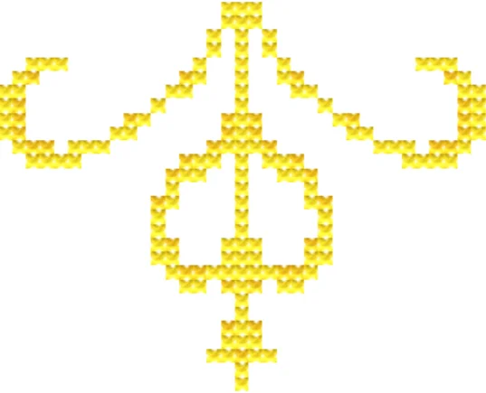

--- James Webb Space Telescope Coasters ---
This series is based on the Wonders of the James Webb Space Telescope Stitchalong by Climbing Goat Designs. When I saw it, I instantly knew I wanted to make it, but I didn't like big projects. That's why I made each picture into a coaster.
The patterns inside the hexagons are from the original pattern; the borders and backs are designed by me. Feel free to contact me for the pattern (and of course, I will not distribute the parts not designed by myself).
--- Cross stitching r/place ---
In case you don't use Reddit a lot, r/place is an online event with a huge white canvas. Everybody gets to place a pixel every five minutes so people have to work together to draw images.
After r/place 2022, a group of people decided to cross-stitch the whole canvas. Since the canvas was huge, it was divided into 400 (20x20) sections of 100x100 stitches each. This was the cross stitching r/place project.
I joined the project in 2023, right after I submitted my thesis for external review, and I stitched the L07 section.
I also made the r/place 2022 version of the Great Wave off Kanagawa as a raffle prize item.
--- Stitching for people I love ---
This version of The Scream comes from r/place 2023. I was in the r/placeDE Discord server and downloaded the original design.
In January 2024, I wanted to stitch a famous painting but couldn't decide which. I had some friends vote between six paintings and The Scream won, because (they said) it precisely showed how PhD life felt like. I made a WeChat group with the five friends who voted for The Scream and updated them everyday with my progress.
I decided to give it to my supervisor as a defense gift. The weekend before my thesis defense, I framed it while videochatting with my mom. When I finished framing and packaging the gift, I started crying.
I said, "I spent so much time being busy and dealing with all kinds of stuff, but I haven't spent much time doing my research, and it all ends now." I was happy that my mom was there, though she was convinced that I was just nervous about my defense.
When my friends later asked me how come I didn't cry at my defense, I said I had already cried.
Some commissions from friends:
- A bottle of Jägermeister to commemorate our first victory in pub quiz as Team Fiji (Based on this Jägermeister design)
- "Cotton deer" for my flatmate (Based on this deer kit design & cotton pattern)
- A samoyed for a fan of Jeno Lee (Samoyed pattern)
Since I started stitching, I became very predictable when it comes to giving gifts. I know that I have great friends that show appreciation for handmade gifts; I do not take it for granted.
- Feeling pretty whale! (Pattern from Etsy)
- Stitch as in Lilo & Stitch, not in cross stitch (Free pattern from SquirrelyStitcher)
- Rainbow fish or Regenbogenfisch (A creation from r/place 2023 by r/placeDE)
- The Duolingo owl (Based on this Perler beads design)
- A keychain to help you decide which grocery store to go to: Lidl or Rewe? (Another creation from r/place 2023 by r/placeDE)